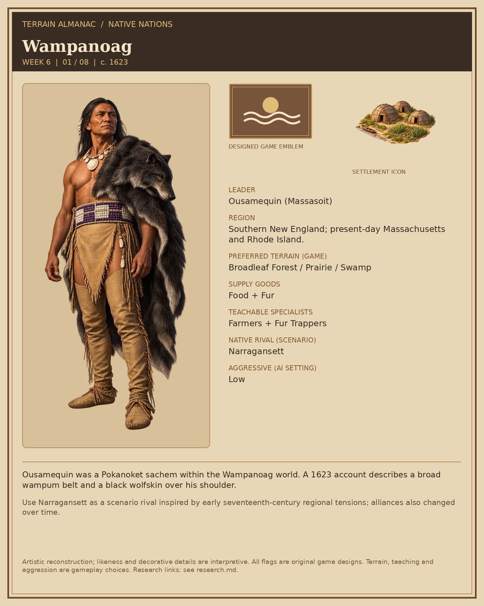
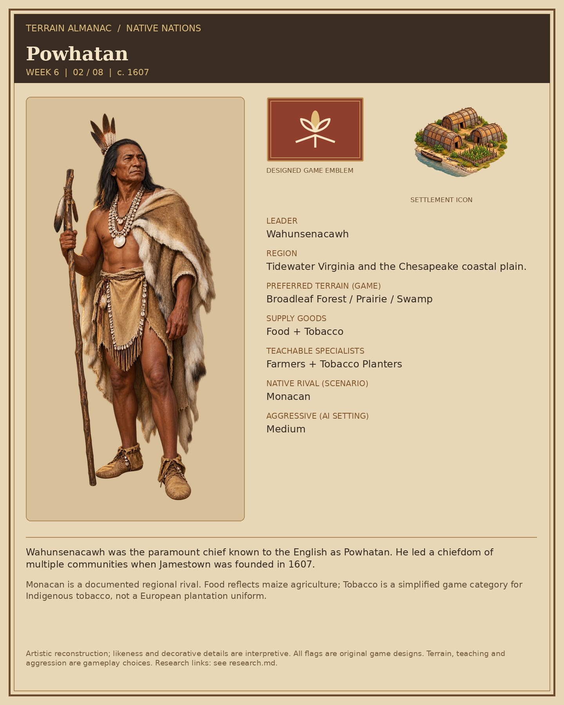
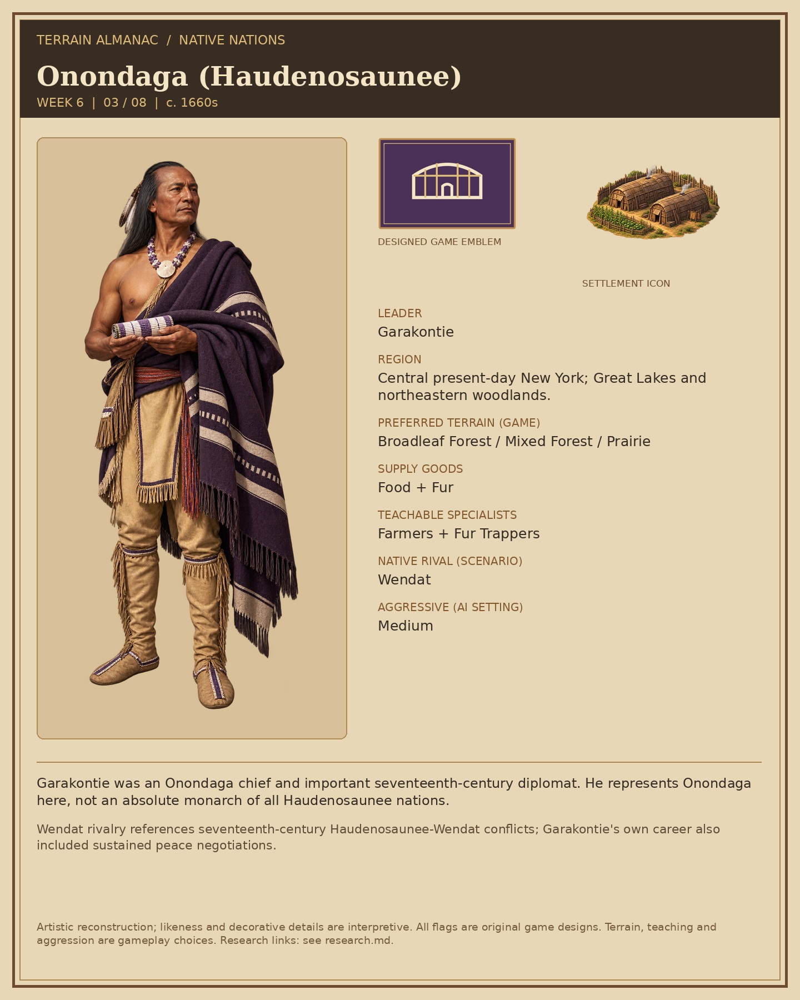
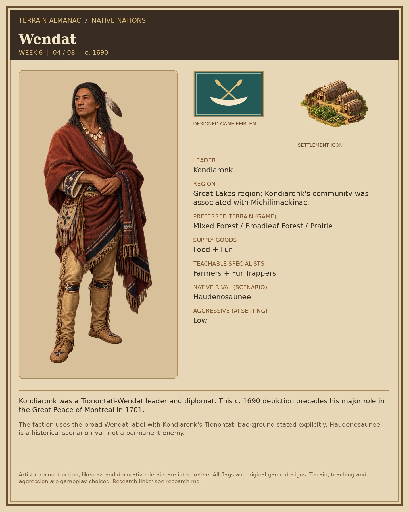
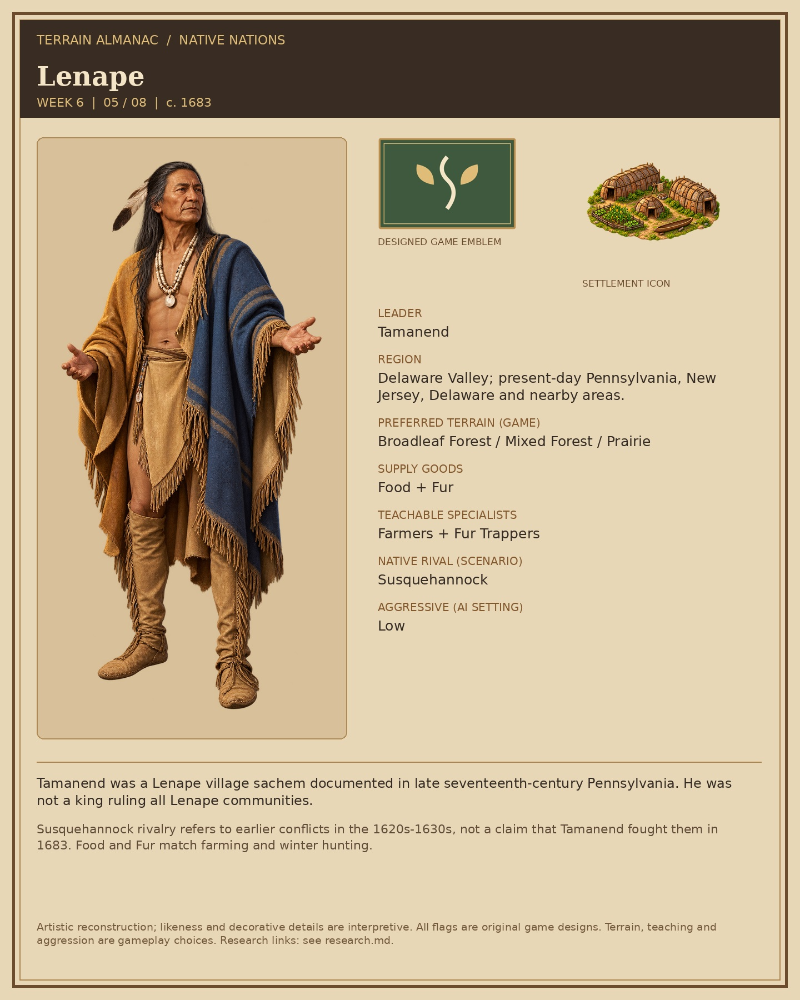
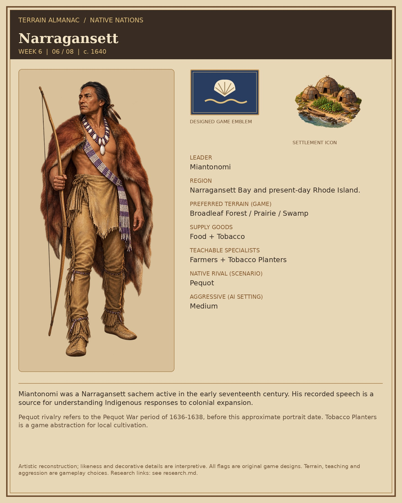
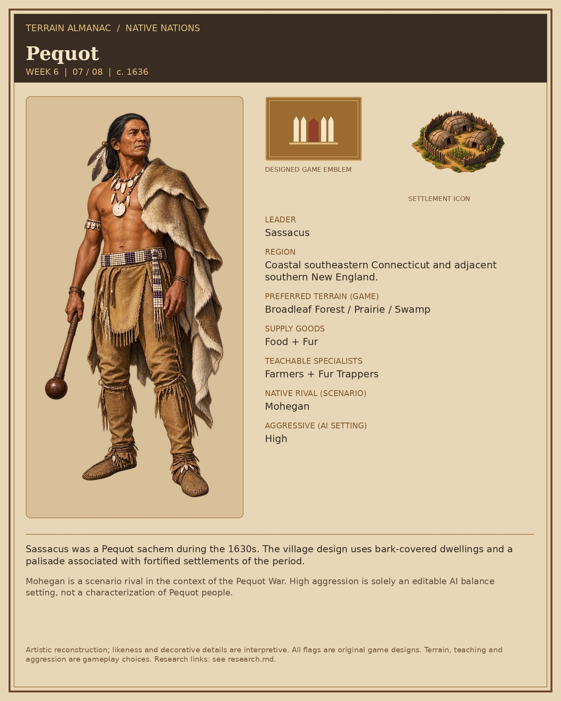
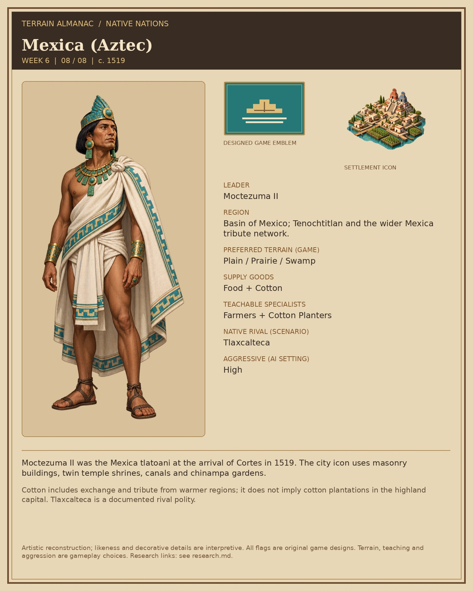

Eight profiles in the Terrain Almanac style. Transparent production sprites are in the individual nation folders. Flags are original game designs. Aggressive values are game settings.
Research and sources · Asset guide







